Assembling conifer genomes
Niklas Mähler
Group meeting 2020-12-11
Why are we doing this?
- First spruce assembly highly fragmented
- Ecologically and economically important species
- A large number of existing field trials
Current spruce trials
Current pine trials
More than 10 million scaffolds
Why is it so difficult?
These genomes are big, highly heterozyogus and full of repeats
First attempt
- 50X PacBio Continuous Long Reads (CLR)
- 50X NovaSeq short reads
MARVEL
Nice on paper, not so much in practice (at least in our hands)
After having used several million CPU hours, it spat out an assembly of 1.4 Gbp…
wtdbg2
… or watchtower… or redbean
- Much faster, but memory hungry
- ~19 Gbp assembly
- Many small errors
HiFi to the rescue
- PacBio Circular Concensus Sequencing (CCS)
- Long reads with low error rate
- 30X coverage, last data for spruce arrived last week
hifiasm
- Incredibly fast and resource efficient
- Very easy to use
- ~34 Gbp assembly
Almost a completely split assembly
Almost a completely split assembly
Haplotype purging
- Built-in to hifiasm
- Obviously doesn't work for us
Are we there yet?
What's next?
- Repeat all of this for pine
- Evaluation
- Scaffolding with HiC
- More evaluation
- Annotation
Acknowledgements
Umeå
- Nathaniel Street
- Ove Nilsson
- Harry Wu
- Nicolas Delhomme
- Vikash Kumar
- Bastian Schiffthaler
- Chanaka Mannapperuma
- Alexis Sullivan
- Tomas Larsson
- Tom van der Valk
- Per Unneberg
- Manfred Grabherr
- Ignas Bunikis
- Remi-André Olsen
- Ellen Sherwood
- Ulf Gyllensten
- Björn Nystedt
Vienna
- Siegfried Schloissnig
Computing
- UPPMAX
- SNIC
- Marcus Lundberg